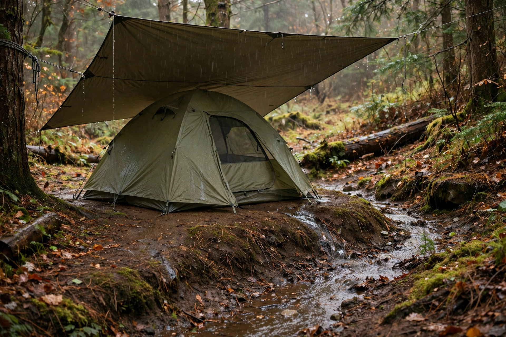

Camping in the rain: how to stay dry when the forecast turns

A rainy camping trip rarely fails because the rain was heavy. It fails because water got managed badly: the tent went up on ground that collects water, wet gear migrated into the sleeping area, and nobody could tell whether the damp walls were a leak or just condensation. Rain camping is a moisture-management problem, and it has a procedure. Follow it in order and a wet weekend becomes a quiet, half-empty campground with the trails to yourself. Skip steps and the same weekend becomes a swamp you bail out of at midnight.
Step 1: Pick ground that sheds water
Site choice decides more than any piece of gear. Look for ground that sits slightly higher than its surroundings — even a rise of six to twelve inches is enough for water to flow away from the tent instead of pooling under it. Avoid the lowest, flattest-looking spot in a clearing: flat and inviting when dry usually means it is the local puddle once an inch of rain falls. Stay out of dry washes, ditches, and drainage channels entirely, because they exist to move water and a storm can send a flash flood down one. Keep distance from rivers and lake edges for the same reason. Pitch on durable, already-worn ground rather than fragile vegetation — a wet site should not also become a damaged site.
Step 2: Pitch the tarp first, then the tent under it
When rain is already falling or clearly coming, rig a tarp before the tent comes out of the car. A tarp overhead creates a dry working area for pitching, cooking, and gear storage, and it gives the group somewhere to exist that is not inside the tent. Angle it so runoff falls to one side, well away from the tent door, and pitch it high enough to stand and cook under safely. Then set the tent up beneath or beside that shelter. Stake out every guyline and tension the rainfly until it is taut: a fly that sags pools water, touches the inner tent, and blocks its own vents. The same tensioning maximizes the airspace between the fly and the tent wall, which matters later for condensation.
One footprint rule prevents the most common self-inflicted flood: the ground tarp or footprint must be tucked completely underneath the tent floor, with nothing sticking out. A footprint that pokes out past the tent walls catches rainfly runoff and channels it directly under the tent, manufacturing a puddle beneath you out of rain that would otherwise have run off harmlessly.
Step 3: Run a wet zone and a dry zone — and defend the line
The single discipline that keeps a rainy trip bearable is separating wet from dry. The vestibule or the space under the tarp is the wet zone: boots, shells, and soaked packs live there. The inner tent is the dry zone, and nothing wet crosses into it. Sleeping clothes get their own dry bag or a heavy plastic bag inside the pack and are changed into only inside the dry zone. This matters beyond comfort: hypothermia can set in at temperatures above 40°F (about 4°C) when you are wet, and a guaranteed-dry layer plus skipping cotton — which stays cold when wet — is the basic defence. Keep spare clothes, food, and electronics in dry sacks or lidded plastic bins even inside the tent; "waterproof tent" is a claim, not a plan.
Is the tent leaking, or is it condensation?
Most "leaks" are not leaks. Before blaming the tent, run this diagnostic:
- Look at the pattern. Condensation appears as an even film of fine droplets spread across the fly or inner wall, usually heaviest near your head, where breath moisture collects. A genuine leak shows up as a concentrated wet patch near a seam, a zipper, or a spot where something presses against the wall.
- Check what is inside. Every sleeper exhales moisture all night, and any wet item stored inside adds more. If wet boots or a damp jacket spent the night in the inner tent, condensation is the likely verdict.
- Check the fly. If the fly sags against the inner tent, moisture transfers at every contact point. Do not push the fabric back from inside — touching the inside of a wet fly breaks the surface tension and draws water through. Re-tension the guylines from outside instead.
- Ventilate. Air inside a tent is almost always more humid than the air outside. Open rainfly vents — opposing vents give cross-ventilation — crack a door zipper at the top, and, when the pitch allows, face the door into a gentle breeze. Repeat after every lull in the rain.
What success looks like: the fly may be wet on its outside surface in the morning, but the inner walls are dry to the touch, sleeping bags are dry, and the only water in camp is where you put it — running off the tarp.
When rain becomes a thunderstorm: leave the tent
Rain is a comfort problem; lightning is a safety problem, and the rules change completely. The National Weather Service is blunt about it: a tent provides no protection from lightning, and neither does an open-sided picnic shelter. The only safe places are a substantial building or a hard-topped vehicle. If thunder is audible, you are within striking distance — lightning can strike more than ten miles from the storm's rainfall — so go to the vehicle or building at the first rumble rather than waiting for the rain to arrive. Then wait a full 30 minutes after the last rumble of thunder before going back to the campsite. Most lightning casualties happen before and after the storm's peak, when people judge by the rain instead of the thunder. Plan the shelter route when you arrive at the site, not when the sky is already flashing.
Packing out wet, and drying at home
The trip is not over when you reach the car. A tent packed away wet and forgotten grows mildew that permanently damages coatings and leaves a smell that never fully leaves. If gear goes home wet, it comes back out within a day: pitch the tent or hang the fly in a yard, garage, or over a shower rod until fully dry, wipe out pooled water and mud, then store it loosely in a cool, dry place rather than compressed in its stuff sack. The same applies to the tarp and footprint. Ten unglamorous minutes at home is what makes the next rainy trip start with working gear instead of a science experiment.
FAQ
Should a rainy forecast cancel the trip? Steady rain with no thunderstorm risk is a manageable condition with the system above. Thunderstorms, flood-prone sites, or rain combined with cold temperatures and no dry spare clothing are the combinations that should change plans.
Why is there water under the tent floor? Check the footprint first: if any of it extends past the tent walls, it is collecting runoff and funnelling it underneath. Tuck it fully under, and confirm the site itself is not a low spot.
How do clothes get dry at a rainy camp? Mostly, they don't — which is why the system protects one guaranteed-dry set for sleeping instead of trying to dry everything. Damp daytime layers can hang under the tarp between showers.
Safety note: this guide is general information. Always check the forecast and local conditions before and during a trip, follow park staff instructions during severe weather, and treat lightning and flood warnings as go/no-go decisions, not inconveniences.